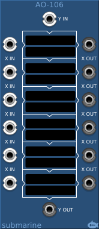
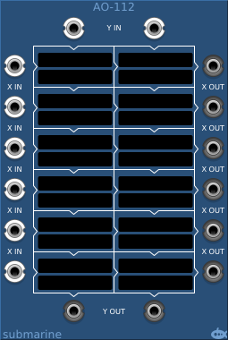
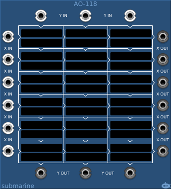
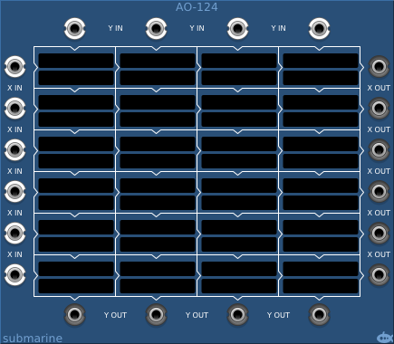
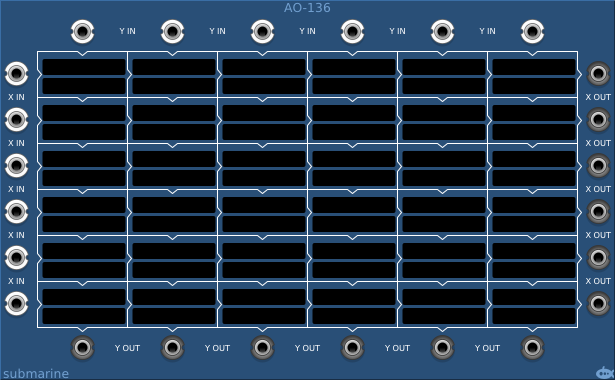

The AO-1xx series of modules take a number of inputs down the left (X-inputs) and a series of inputs across the top (Y-inputs). These inputs pass through blocks which apply simple mathematical algorithms and the results of the algorithms pass out of the block down and to the right, becoming the X and Y inputs of blocks to the right and below. Each block has two touch sensitive displays; the upper display allows you to select from around 200 pre-defined algorithms; the lower display allows you to set a third value (C) on which the algorithm operates.
If no algorithm is selected, the X-input to the block passes directly through to the block (or output) on the right, and the Y-input passes directly through to the block (or output) below.